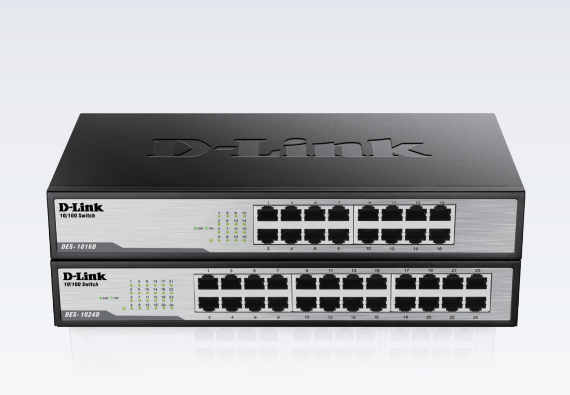

El DES-1016D es un switch Ethernet no administrado de la marca D-Link.
El modelo DES-1016D en particular es un switch de 16 puertos, lo que significa que tiene capacidad para conectar hasta 16 dispositivos mediante cables Ethernet. Estos switches son comúnmente utilizados en entornos domésticos, pequeñas oficinas u otras redes pequeñas donde se requiere conectar varios dispositivos, como computadoras, impresoras, cámaras IP, dispositivos de almacenamiento en red (NAS), entre otros.